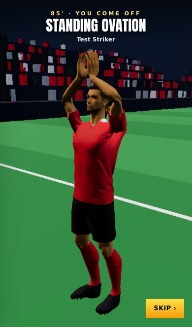
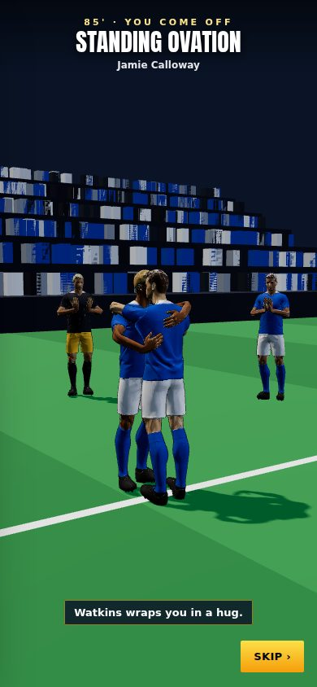
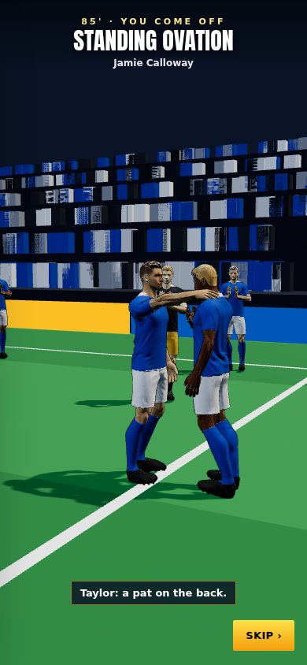
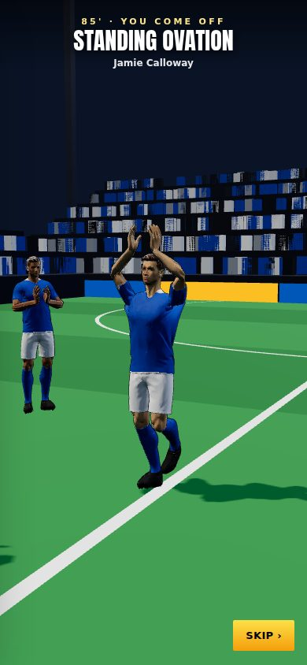
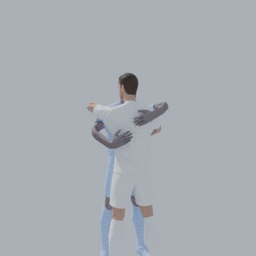
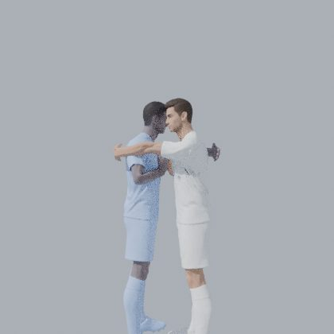
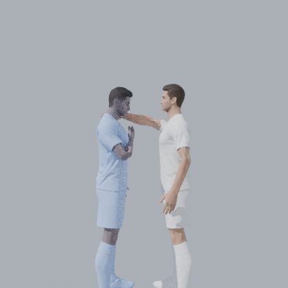

8 October 2026 · branch Mikey · tests: 269 of 269 passing · production build passes
8Moves made in Blender: 3 greetings for each player, 2 claps
45 mmMedian gap between a hugging hand and the other player's back
49 KBThe moves file the phone downloads
85'The 3D ovation started on time in a real farewell, and played 23 s
Check these
Headline: "the standing ovation didn't do anything"
In a real farewell, the 3D standing ovation takes over the screen at 85' and plays to the end.
Problem: you came off at 85' in your farewell and saw no 3D scene. Why: no fault found in the code. A test player played a full farewell, and the scene started at 85' and ran for 23 s. Then the match played on to full time (2–1). The live site also has the code; I checked the site's own files. The most likely cause: your phone still had the page from before the update went live (it was merged minutes before you played). An open tab keeps the old version until it reloads. Fix: nothing to change in the game. Close the game fully, open it again, and check Settings → Look → Standing ovation says New. seen in a real farewell

A real farewell at 85': the screen goes 3D and you clap the stands.
The ovation's greetings, made in Blender
The hugs, dap-ups, pat and claps are now real animations, made in Blender with both players in the scene.
Problem: in v0.11 each arm was placed live in the game, one reach at a time, onto a guess at where the other player's back was. Hugs could look stiff, and nothing moved but the arms. Why: the game had no hug or dap-up animations. Fix: Blender now runs in our cloud sessions (your setup script). A script stands two of our real 3D players face to face, puts each hand onto the other player's real body, and records every frame. The spine leans in, the shoulders come forward, the heads pass each other, and the hands pat. The file also says where the other player stands on every frame, so the game puts them in exactly the same spots. seen in the 3D scene

New: the hug from Blender. Both arms round the back, one high, one low.
The dap-up: right hands clasp, then he pulls you in, right shoulders together.

New: a pat on his shoulder, and he puts his hand on his heart.

Your clap above your head; everyone else claps at the chest.
How close the hands get (measured in Blender)
Gap between each palm and the other player's body, in the middle of each move:
Hug
33–89 mm, middle 45
Pat
30 mm
Dap (back slap)
27–75 mm while it swings in
An arm going into the other player: 54 mm at most in the hug (a forearm brushing his side), 6 mm in the dap, none in the pat.
The Blender stills, from four sides each, were checked by eye. A first build had the second player facing the wrong way (Blender ignored the turn), so he was hugging from behind. The script now checks that both players face each other.

In Blender, from behind you: his hands on your back.

The dap-up's pull-in.

The pat and the hand on the heart.
Files: tools/ovation3d/ (the Blender script and its README), public/star/ovation3d/greetings.glb, lib/star/ovation3d.ts, lib/star/ovationMoves.ts.
Known issues
The finger shapes are set in the game, not in Blender LOW
The grip in the dap-up and the flat hands are simple curls. Blender only made the arms and bodies.
Not seen on a phone yet LOW
Checked in a browser on this machine, which has no graphics chip. How smooth it is on a phone is for you to judge; Old is the safety net.
Add numpy to the setup script LOW
Blender's scripts need it: change the line to apt-get update && apt-get install -y blender python3-numpy.
Previous versions
v0.11 · 8 October 2026 · 3D standing ovation; centre-back Golden Boot and day-one line-ups fixed; more assists; clearances, negotiations and Relations reworked
v0.10 · 4 October 2026 · Relationships rebuilt: bars that move slowly, one game per relationship, happiness decides recovery, no Sponsors bar; injuries switched off
v0.9 · 3 October 2026 · XP rebuilt (slower start, XP by the minute, no double pay) and the XP Book to edit every amount; 3D garden, North/South 2026/27, Club Data
v0.8 · 30 September 2026 · Sponsors Revamp: brands send offers, deal slots by fame, weekly fees, targets, brand happiness, bidding wars, buy-outs and scandals
v0.7 · 30 September 2026 · A new 1-10 star career rating separate from overall, 7 boots, dearer Style, 2 training sessions a week, restyled training, contract terms
v0.6 · 27 September 2026 · Five levels of every boot and lifestyle item, a moving ball on the strike screen, commentary that barely repeats, new chants
v0.5 · 26 September 2026 · How you get picked: win your shirt from a better-rated rival, form over 3 games, subs when the score says, cup rotation
v0.4 · 25 September 2026 · Training rebuilt the New Star Soccer way: 30 fixed levels, three tries, stars raise the skill; pace, vision and free kick matter in matches
v0.3 · 25 September 2026 · What you see on the pitch matches where people stand: nearer players and the ball drawn right, corners from the flag; trophy pictures, instant energy modes, feed likes
v0.2 · 22 September 2026 · Energy master plan: in-match energy modes, a real ticking clock, half-time KIB cans, rest days, tougher fatigue rules
v0.1 · 21 September 2026 · Economy, fame and reputation rebuild: Premier League wages to ★100k, fame levels, one reputation number, 50-season careers